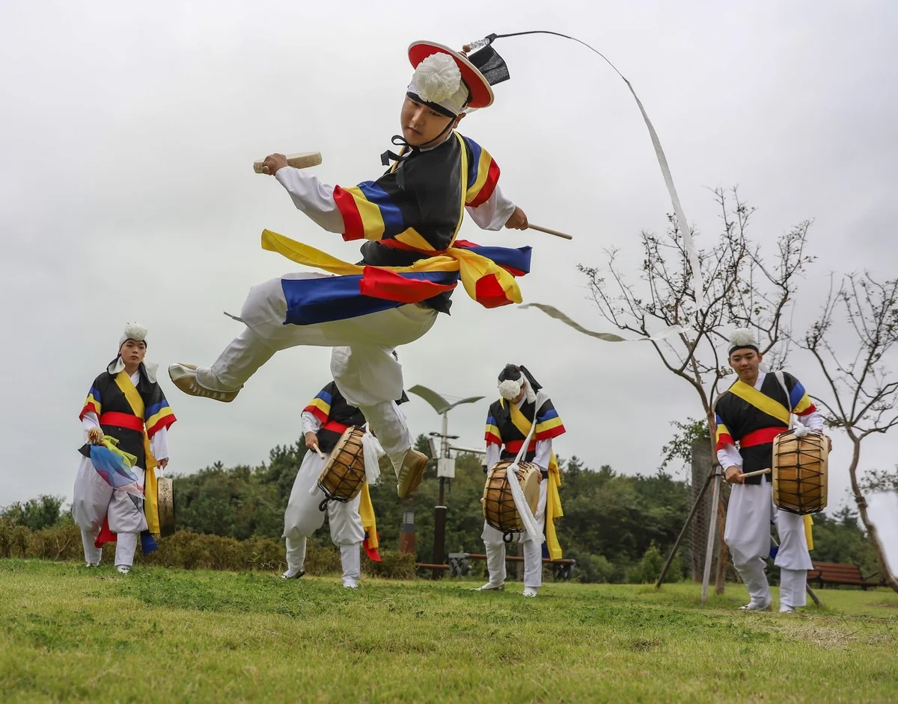

Judul dari sang fotografer
Lihat di Pameran 3D Unduh berkas asli

Cara mencantumkan sumber
Yumok (流木) Lee Dong-joo, “Semangat Menggelora”, 2019. CC BY 4.0, seungheon.com
Karya terpilih, Kompetisi Pemotretan Nasional Mokpo 2019 · 2019
Penghargaan
Judul dari sang fotografer
Lihat di Pameran 3D Unduh berkas asli
Yumok (流木) Lee Dong-joo, “Semangat Menggelora”, 2019. CC BY 4.0, seungheon.com